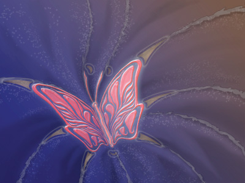
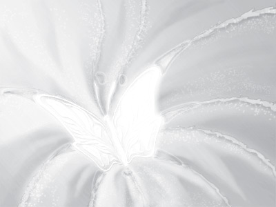
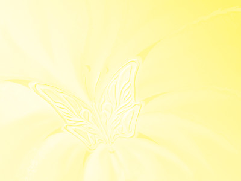
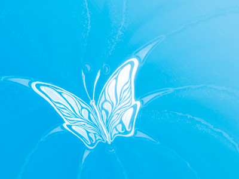
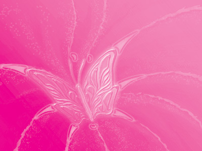

Цветовые каналы
Каждую цветовую модель можно разложить на составляющие. В модели RGB, например можно выделить уровень красного, зелёного или синего цвета, приравняв остальные к нулю. Эти составляющие в каждой модели называются каналами.
В аддитивной модели выделение канала аналогично пропусканию света через соответствующий фильтр, то есть изображение канала R модели RGB будет похоже на то, что вы увидите, смотря через красное стекло.В субтрактивной модели CMYK каждый канал соответствуют количеству краски, затрачиваемой принтером на его печать, то есть если в вашем струйном принтере засохнет пурпурная и жёлтая краска и кончится чёрная, то вы увидите примерно то же изображение, что и в канале C.
В некоторых графических форматах есть возможность добавления дополнительных каналов. Например, часто можно добавить альфа-канал, определяющий прозрачность изображения или отдельных слоёв и объектов (обычно 256 уровней прозрачности). Каналы могут быть использованы для цветовой коррекции изображений и для создания различных спецэффектов. Каналы в основном используются при работе с растровой графикой. Многие трюки в современных фильмах сделаны при помощи каналов. Например, чтобы создать эффект полёта, человека помещают в специально окрашенную зелёную комнату, и подвешивают за зелёные верёвки. Затем изображение человека можно легко вырезать, используя зелёный канал, и поместить на нужном фоне.
Цветовые каналы RGB


Цветовые каналы CMYK
    Данный сайт создан как учебное пособие по теме "Компьютерная рафика"
Автор гр.114 Василенко В. А.